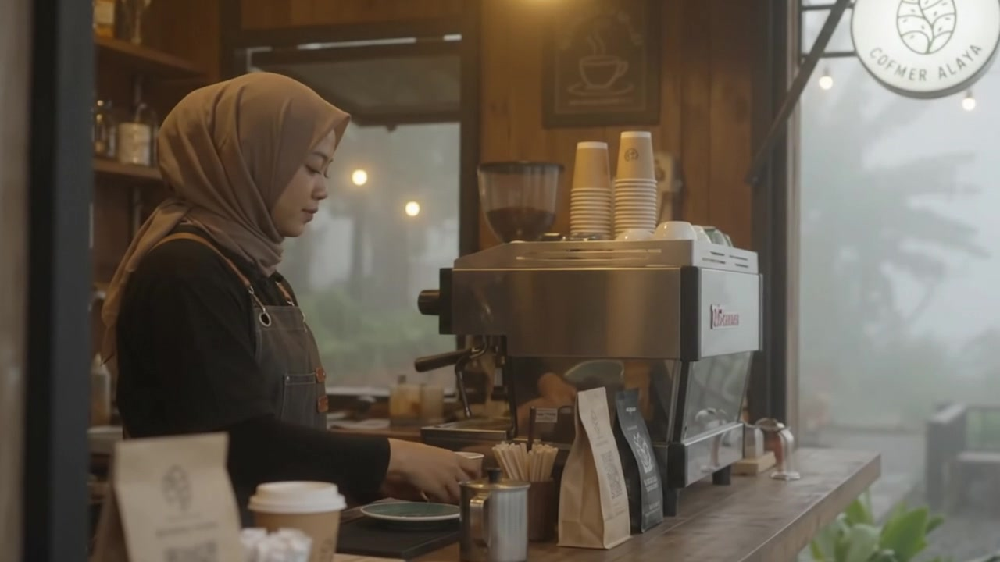
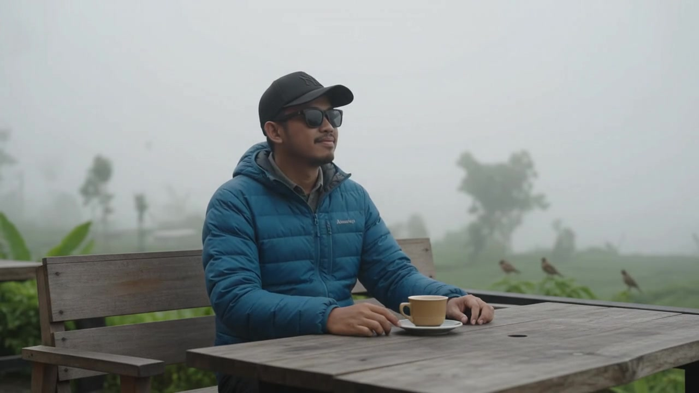
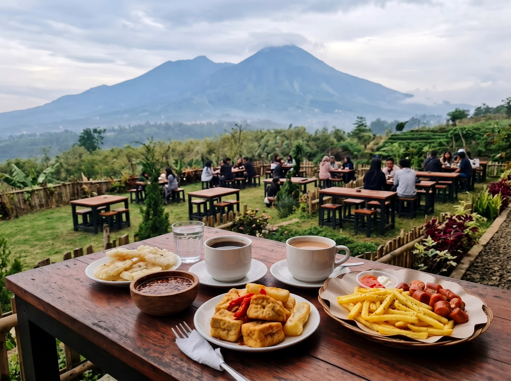
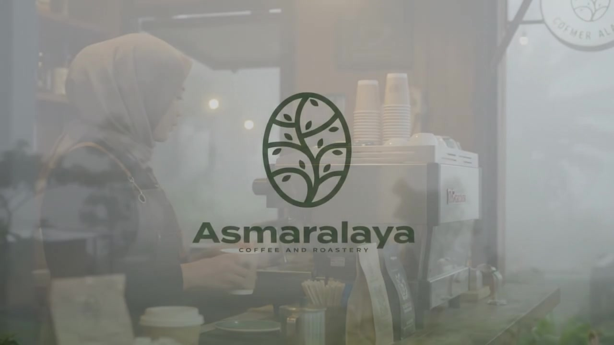
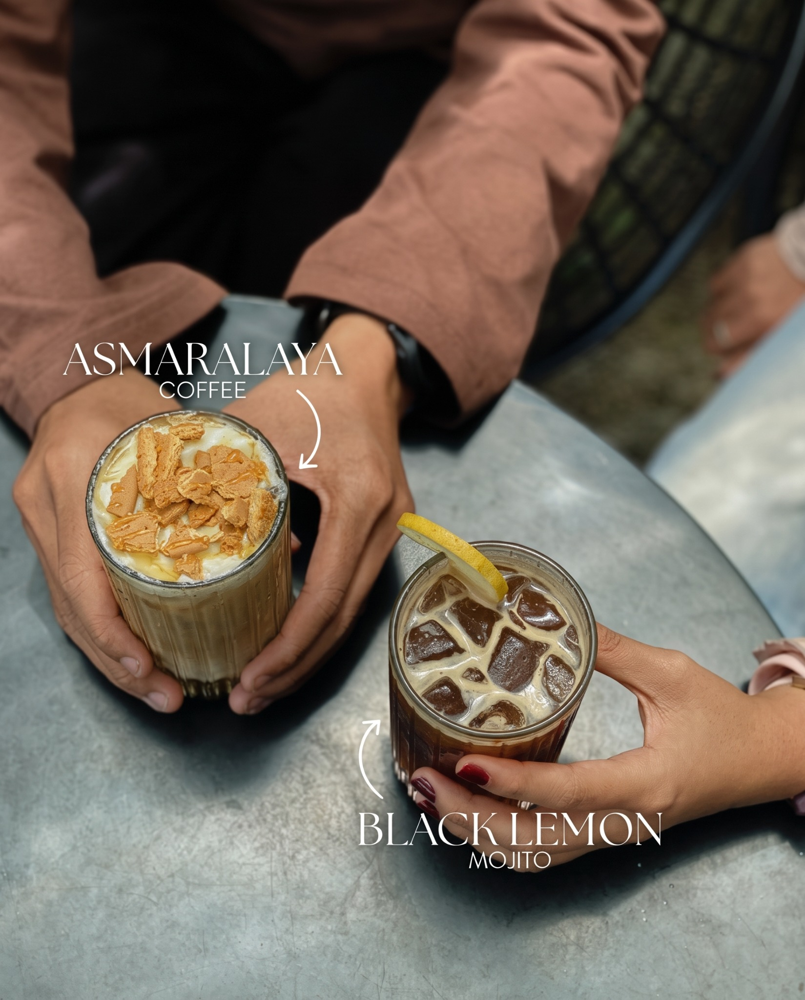
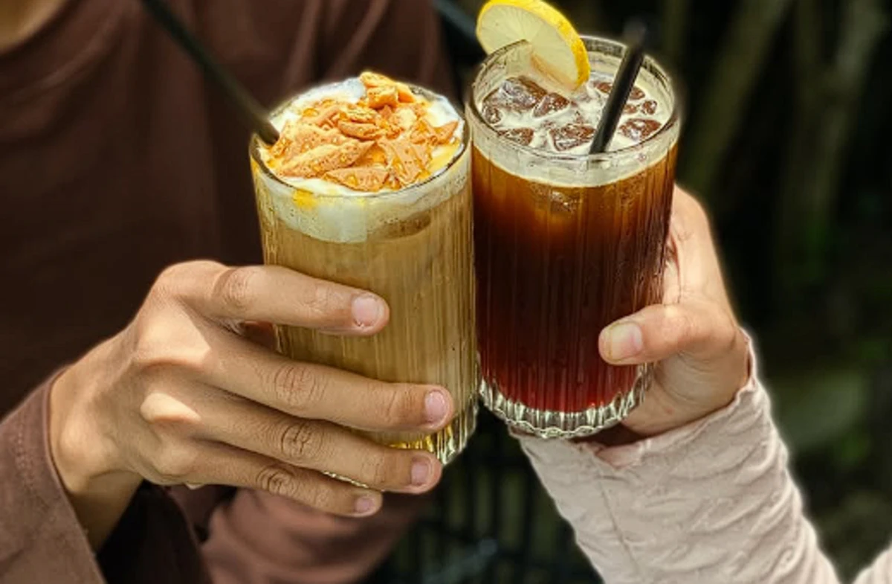
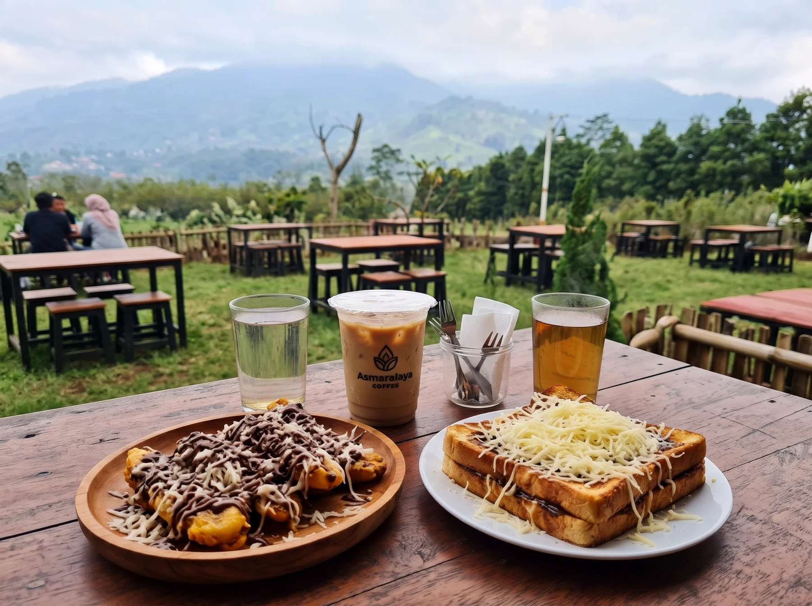
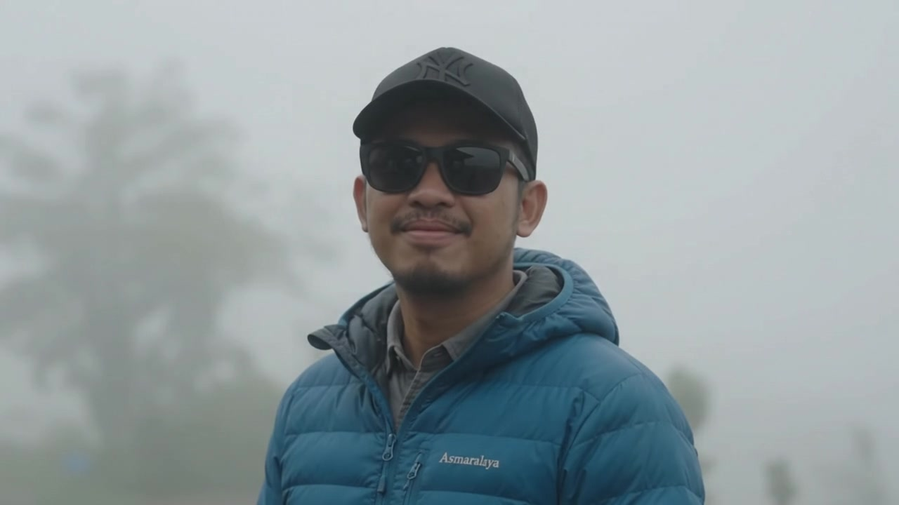

Alam
Selaras dengan alam dan lingkungan sekitar
NGOPI TENANG DI TENGAH ALAM
Tempat singgah untuk menikmati kopi, kabut, udara sejuk, dan pemandangan alam Puncak yang menenangkan.
TENTANG ASMARALAYA
Asmaralaya Coffee adalah ruang singgah di kawasan Cisarua, Puncak, yang mempertemukan kopi, alam, dan kebersamaan. Dengan udara pegunungan yang sejuk dan panorama hijau yang terbuka, Asmaralaya menghadirkan suasana hangat untuk berhenti sejenak dari rutinitas.
Selaras dengan alam dan lingkungan sekitar
Kopi pilihan dengan rasa terbaik
Suasana hangat dan nyaman untuk semua

EXPERIENCE

Nikmati kopi dengan pemandangan kabut dan udara sejuk khas Puncak.
Suasana hangat dan nyaman untuk ngobrol, bekerja, atau menyendiri.

Kopi signature, camilan, dan sajian hangat untuk menemani udara sejuk Puncak.

Sudut hijau, coffee bar, dan atmosfer berkabut yang khas untuk mengabadikan momen.
GALERI




HUBUNGI ASMARALAYA
Kirim pertanyaan singkat mengenai suasana, akses, atau kunjungan. Pada versi Node.js, formulir ini divalidasi melalui Express API. Pada static demo, pesan diarahkan ke WhatsApp resmi.
KUNJUNGI KAMI